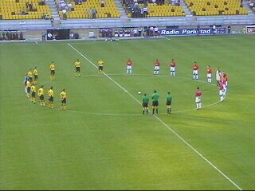
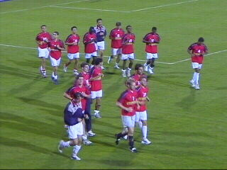

|
Roda JC - MVV (3-1) 13 augustus 2002 |
Er komen zelfs supporters uit Engeland op dit
duel af.
Maastricht voor het eerst in het PLS.

Voor de aftrap wordt er een minuut stilte in acht
genomen voor Kasper Somers, erelid Roda JC.
Over en wordt aardig wat gezongen....
In de 12e min. scoort Van Dessel.
In de 20e min. kopt Christiano met een enorme
boog
over de doelman van MVV heen.
Rudge heeft weer op de keeper teruggespeeld
die met
de handen moet redden. Temmink wijst
aan waar de
vrije trap genomen moet worden.
Net als enkele dagen geleden tegen Chelsea
stelt het
complete elftal zich in de goal op. De
vrije trap wordt
deze keer echter geblokkeerd.
Vlak voor het einde van de eerste helft is er een
incident
tussen Van Doorn van MVV en Soetaers.
Soetaers lijkt
Van Doorn een kopstoot te geven
en krijgt rood.
Van Doorn die als eerste een klap
uitdeelde krijgt geel.
Soetaers wordt vanachter vastgehouden door
een
andere MVV'er. Van Doorn stort ter aarde.

Daarna doen meer spelers mee aan het trek- en
duwwerk.
Ook op weg naar de kleedkamers.
Taiwo scoort 2-1 (73).
Bij een botsing verliest Christiano een scheen-
beschermer.
MVV'ers protesteren bij Temmink nadat deze
Roda een
penalty toe heeft gekend.
Berglund verzilvert de strafschop (84).
Een bedankje aan zuid. De "wave" schijnt
tegenwoordig
voorbehouden te zijn voor de
westzijde.

De cooling-down van de Maastrichtenaren
duurt bijna
60 minuten!!!
Een slechtgetapt bekertje Bavaria drab kost
inmiddels
al €1,45. Deze grootverbruikers zijn
van plan de prijzen
aan te passen.
De broodjes zijn alvast gratis ;-)
©
Koempels
Pleasure Dome